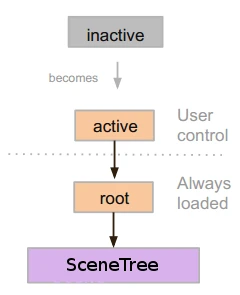
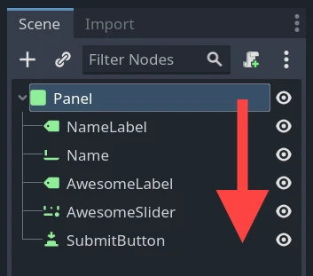

Using SceneTree
Introduction
In previous tutorials, everything revolved around the concept of nodes. Scenes are collections of nodes. They become active once they enter the scene tree.
MainLoop
The way Godot works internally is as follows: There is the OS class, which is the only instance that runs at the beginning. Afterwards, all drivers, servers, scripting languages, scene system, etc. are loaded.
When initialization is complete, OS needs to be supplied a MainLoop to run. Up to this point, all this is internals working (you can check main/main.cpp file in the source code if you are ever interested to see how this works internally).
The user program, or game, starts in the MainLoop. This class has a few methods, for initialization, idle (frame-synchronized callback), fixed (physics-synchronized callback), and input. Again, this is low level and when making games in Godot, writing your own MainLoop seldom makes sense.
SceneTree
One of the ways to explain how Godot works is that it's a high-level game engine over a low-level middleware.
The scene system is the game engine, while the OS and servers are the low-level API.
The scene system provides its own main loop to OS, SceneTree. This is automatically instanced and set when running a scene, no need to do any extra work.
It's important to know that this class exists because it has a few important uses:
It contains the root Viewport, to which a scene is added as a child when it's first opened to become part of the Scene Tree (more on that next).
It contains information about the groups and has the means to call all nodes in a group or get a list of them.
It contains some global state functionality, such as setting pause mode or quitting the process.
When a node is part of the Scene Tree, the SceneTree singleton can be obtained by calling Node.get_tree().
Root viewport
The root Viewport is always at the top of the scene. From a node, it can be obtained in two different ways:
get_tree().root # Access via scene main loop.
get_node("/root") # Access via absolute path.
GetTree().Root // Access via scene main loop.
GetNode("/root"); // Access via absolute path.
This node contains the main viewport. Anything that is a child of a Viewport is drawn inside of it by default, so it makes sense that the top of all nodes is always a node of this type otherwise nothing would be seen.
While other viewports can be created in the scene (for split-screen effects and such), this one is the only one that is never created by the user. It's created automatically inside SceneTree.
Scene tree
When a node is connected, directly or indirectly, to the root viewport, it becomes part of the scene tree.
This means that as explained in previous tutorials, it will get the
_enter_tree() and _ready() callbacks (as well as _exit_tree()).

When nodes enter the Scene Tree, they become active. They get access to everything they need to process, get input, display 2D and 3D visuals, receive and send notifications, play sounds, etc. When they are removed from the scene tree, they lose these abilities.
Tree order
Most node operations in Godot, such as drawing 2D, processing, or getting notifications are done in tree order, or top to bottom as seen in the editor (also known as pre-order traversal):

For example, the top node in a scene has its _process() function
called first, then the node below it has its _process() function called,
then the node below that and so on.
An important exception is the _ready() function: each parent node has its
_ready() function called only after all its child nodes have their
_ready() functions called, so that the parent knows its children are
completely ready to be accessed. This is also known as post-order traversal.
In the above image, NameLabel would be notified first (but only after its
children, if it had any!), followed by Name, etc., and Panel would be
notified last.
The order of operations can also be overridden using the process_priority
node property. Nodes with a lower number are called first. For example, nodes
with the priorities "0, 1, 2, 3" would be called in that order from left to right.
"Becoming active" by entering the Scene Tree
A scene is loaded from disk or created by scripting.
The root node of that scene (only one root, remember?) is added as either a child of the "root" Viewport (from SceneTree), or to any of its descendants.
Every node of the newly added scene will receive the "enter_tree" notification (
_enter_tree()callback in GDScript) in top-to-bottom order (pre-order traversal).Every node will receive the "ready" notification (
_ready()callback in GDScript) for convenience, once all its children have received the "ready" notification (post-order traversal).When a scene (or part of it) is removed, they receive the "exit scene" notification (
_exit_tree()callback in GDScript) in bottom-to-top order (the exact reverse of top-to-bottom order).
Changing current scene
After a scene is loaded, you may want to change this scene for another one. One way to do this is to use the SceneTree.change_scene_to_file() function:
func _my_level_was_completed():
get_tree().change_scene_to_file("res://levels/level2.tscn")
public void _MyLevelWasCompleted()
{
GetTree().ChangeSceneToFile("res://levels/level2.tscn");
}
Rather than using file paths, one can also use ready-made PackedScene resources using the equivalent function SceneTree.change_scene_to_packed(PackedScene scene):
var next_scene = preload("res://levels/level2.tscn")
func _my_level_was_completed():
get_tree().change_scene_to_packed(next_scene)
public void _MyLevelWasCompleted()
{
var nextScene = (PackedScene)ResourceLoader.Load("res://levels/level2.tscn");
GetTree().ChangeSceneToPacked(nextScene);
}
These are quick and useful ways to switch scenes but have the drawback that the game will stall until the new scene is loaded and running. At some point in the development of your game, it may be preferable to create proper loading screens with progress bar, animated indicators or threaded (background) loading. This must be done manually using Singletons (Autoload) and Background loading.